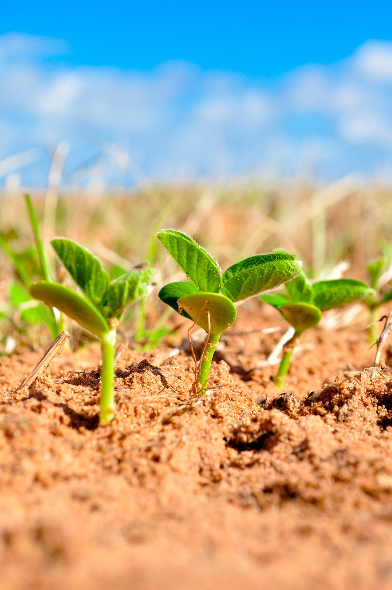
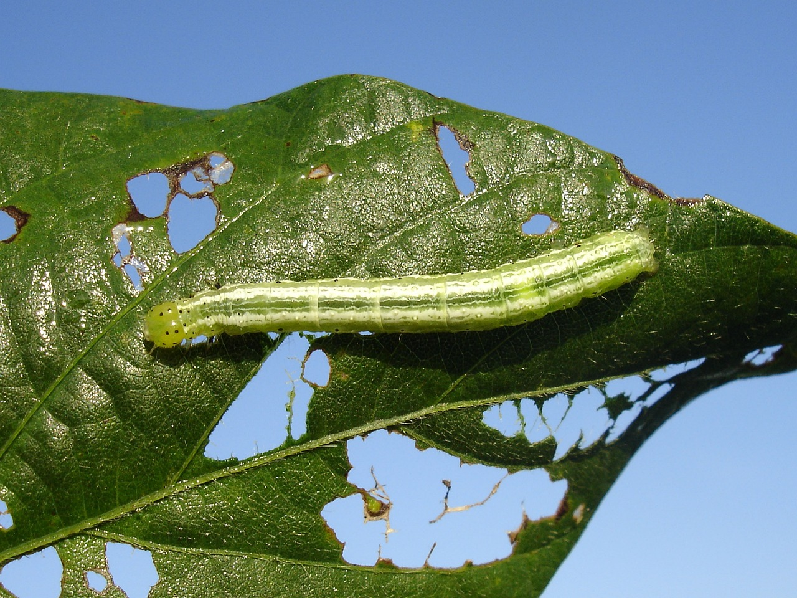
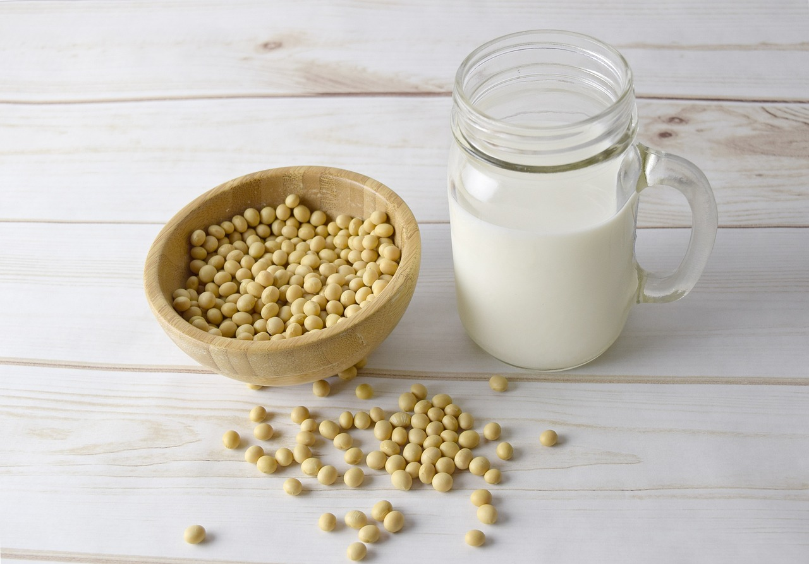

Sobre o soja

A soja, uma das culturas agrícolas mais importantes globalmente, desempenha um papel vital em
várias esferas, desde a alimentação humana até a indútria.
Originária da Ásia, a soja é cultivada em diversos países, com o Brail e os Estados Unidos
liderando a produção.
Desafios

Os desafios enfrentados na produção de soja podem incluir questoẽs como variações climáticas,
pragas e doenças, gestão sustentável da terra e recursos hídricos, além de questões
econômicas como flutuações de preços e acesso a mercados.
Contribuição

Ela é usada na alimentação humana, na produção de óleos, farinhas, leites vegetais e tofu,
além de ser uma importante fonte de ração para animais
Relogio
Tempo restante
7
dias
7
horas
7
min
7
seg